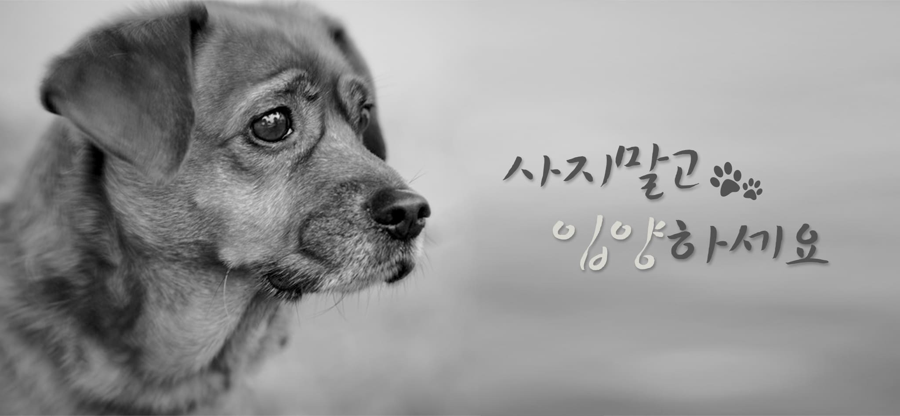
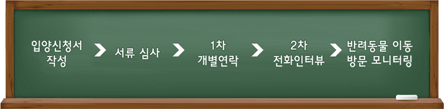

누구든지 돈을 주고 동물을 산다면 그 이면에는 죽을때까지 고통 받아야 하는 또 다른 생명들이 존재해야 하는 것을 기억해 주세요.

입양신청
입양절차
임시보호
개인구조
입양신청 시 카라 입양원칙에 동의 하셔야 합니다.
[입양신청하기]게시판의 입양신청서를 제출해주셔야 등록이 됩니다.
입양동의서를 꼼꼼히 확인해주시고 모든 항목들에 동의하신다면 입양신청서를 작성해주세요.
맞음비는 유기동물 치료비, 동물보호소 후원금으로 전액 사용됩니다.

아직 입양이 망설여지시거나 기존에 있던 동물과의 관계가 걱정이 되신다면 임시보호를 신청해보세요.
입양 담당자와의 지속적인 상담 후 입양을 결정하셔도 좋습니다.
또한 사람을 경계하거나 사설보호소에서 구조된 동물은 임시보호가정에서의 보살핌이 추후 입양에 긍정적인 영향을 가져올 수 있습니다.
몸과 마음에 상처 입은 동물들이 가정에서 따뜻한 보살핌을 받고 상처가 치유되기도 합니다.
단체에서 구조한 동물들 외에도 개인이 구조하여 보호하고 있는 유기동물들도 가족을 기다리고 있습니다.
단체에 신청서를 제출하신 분 중 선별하여 개인구조 공간에 정보를 게시하고 있으며, 개인구조의 입양절차와 신청은 단체의 기준과 다릅니다.
게시글 내의 구조자와 직접 상담하여 입양을 결정하시면 됩니다. 유기동물 입양홍보가 필요하신 분은 ‘입양홍보신청서’를 작성해주세요.